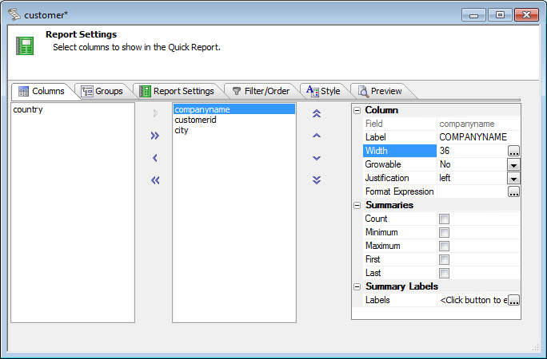
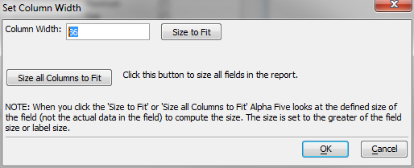
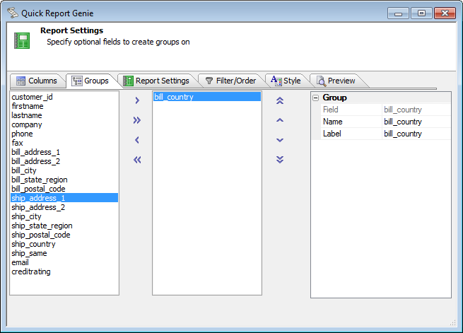
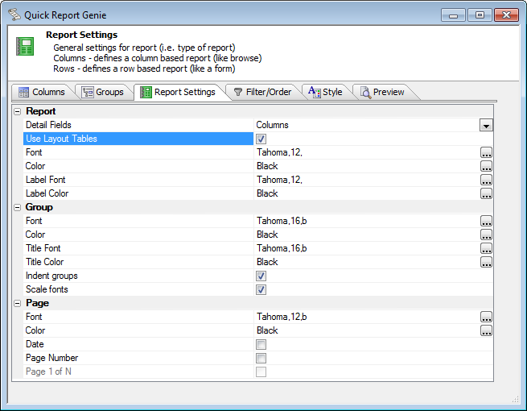
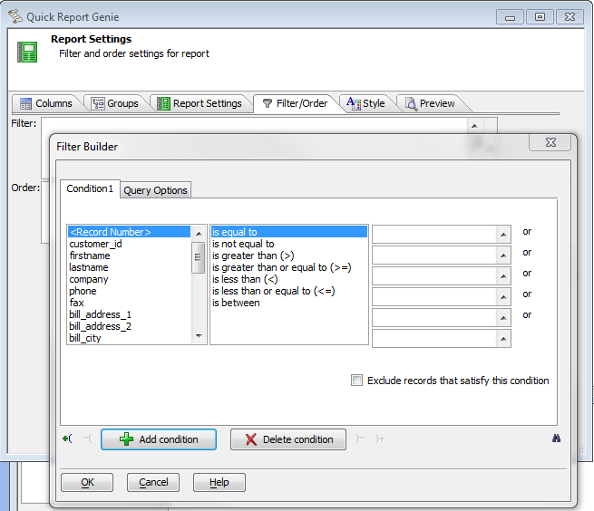
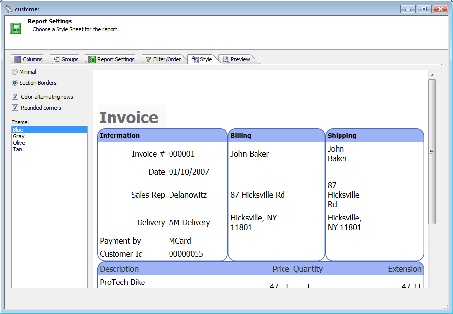
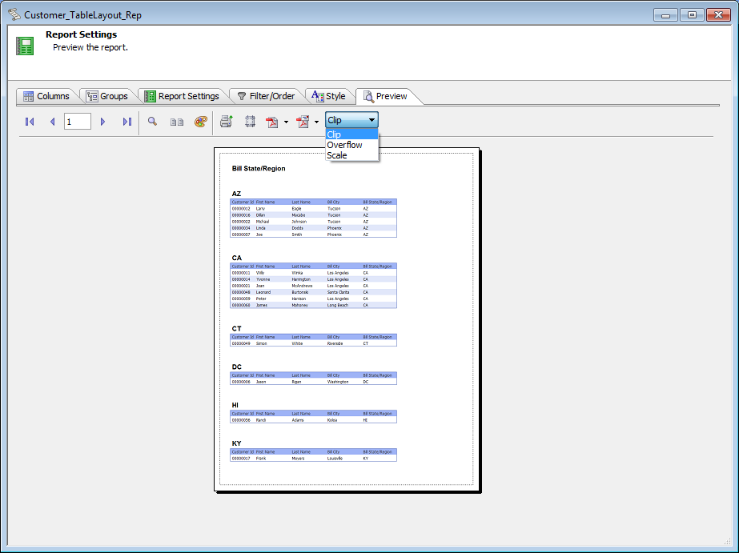

The Quick Report Genie
In Alpha Five Version 11 the Quick Report Genie has been rewritten from scratch. The new Quick Report Genie is considerably more useful (and attractive) than the old Genie.One key difference to note is that Quick Reports can be used as they are and saved for future editing. In contrast, the old Quick Report Genie was a one-shot, one-way starter for the Report Editor.
How much can you do with Quick Reports alone? Quite a bit, actually: you can establish the overall structure and style of the report, adjust your fonts, and even customize the field and group labels. What you can't do with Quick Reports alone is to fine-tune your report, page, and continuation headers and footers, add graphics and charts, add controls and super-controls, add sub-reports and linked reports, or add bookmarks and Table of Contents.
When you've gone as far as you can with a Quick Report, you can save it as a free form report or a layout table report. This is a one-way process. If you want to keep the quick report as well as the free form report or layout table report, first save the quick report as another name.
Before the Quick Report Genie begins, create a new report from the Reports tab of the Control Panel, pick or create a SQL or DBF Data Source, and pick Use Quick Report for your method.
In the first tab of the Quick Report Genie, select the table columns you would like to display. At this point you can also adjust the column label and width and check off the summaries you'd like calculated.

You may automatically size columns to fit if you wish.

Select the fields you would like to use as group breaks. You can also set the group break labels here.

Pick your report settings. Note the checkbox to Use Layout Tables. This applies to the Quick Report only. If you open the Quick Report in an editor later, you will be able to choose between a Layout Table Report or a Free Form Report. Below the properties visible in this screen shot, there are settings for paper size and orientation.

Build filter and order expressions for your report. Remember that when you run your report you can apply additional filters; for SQL reports, there can also be additional terms added to the WHERE clause in the underlying SQL SELECT query.

If this is a report using table layouts, pick your style.

Set your choice of actions for page mismatches/overflows and preview your report.

From the report preview, you can print if you wish,and also save or email the result in a number of formats: PDF, Rich Text, Plain Text, Excel, and for Layout Table Reports, Dynamic HTML.